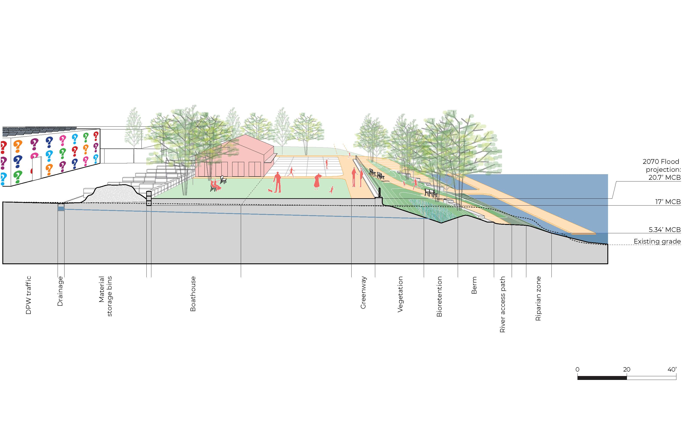
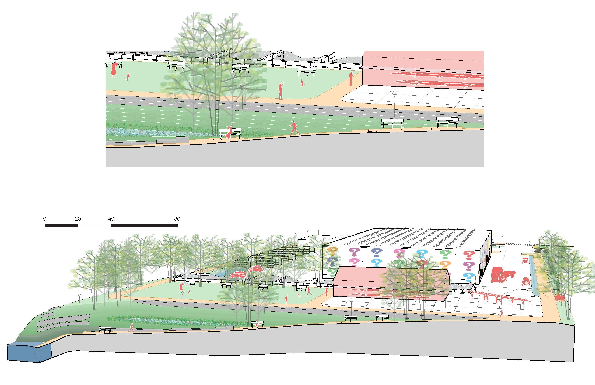
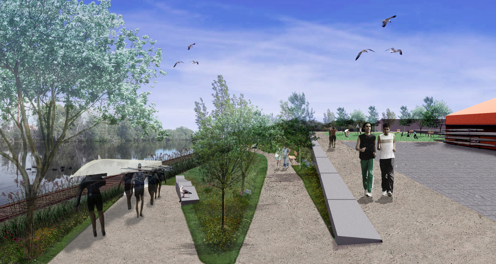
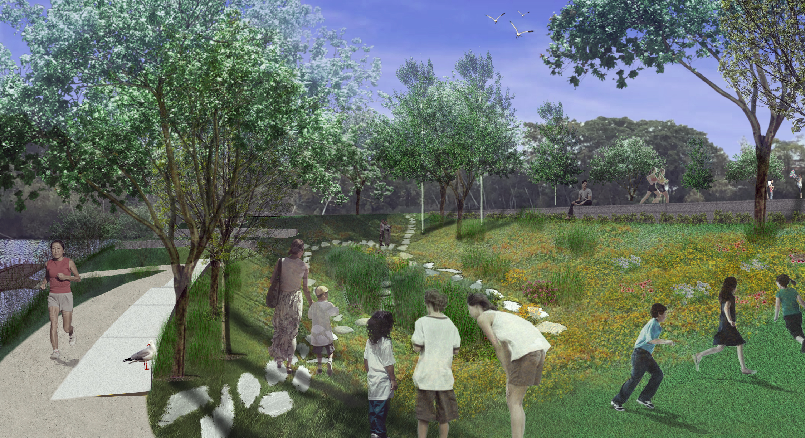
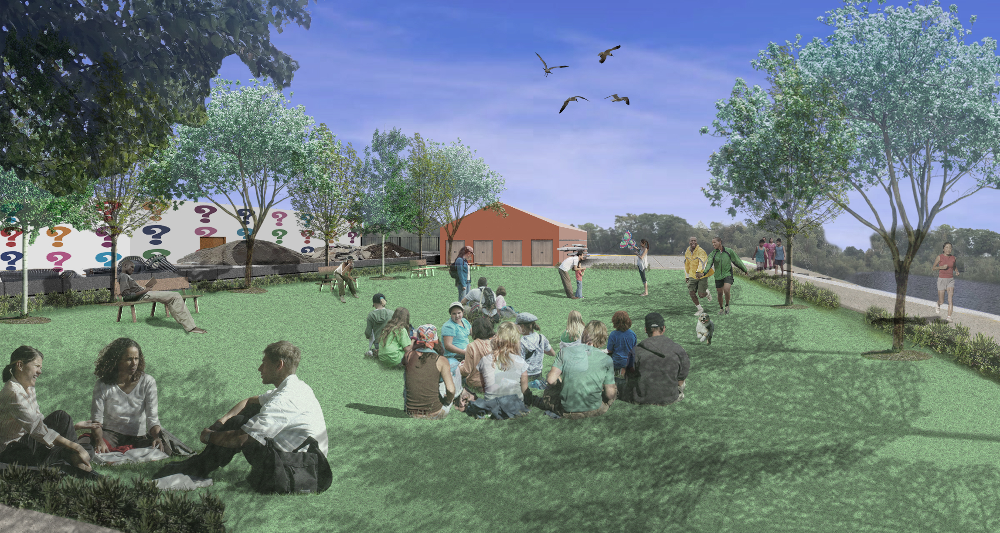
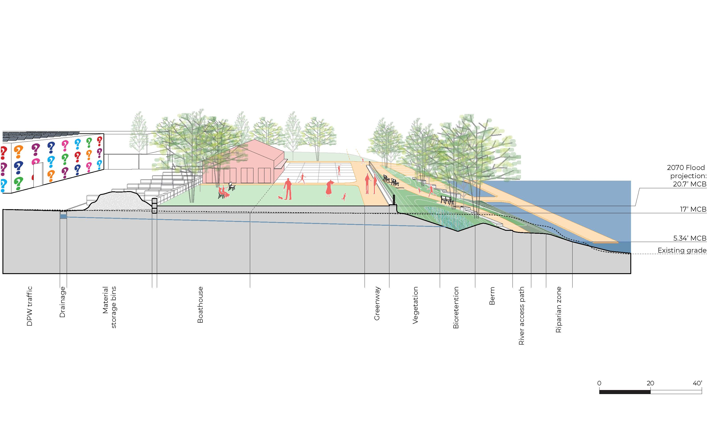
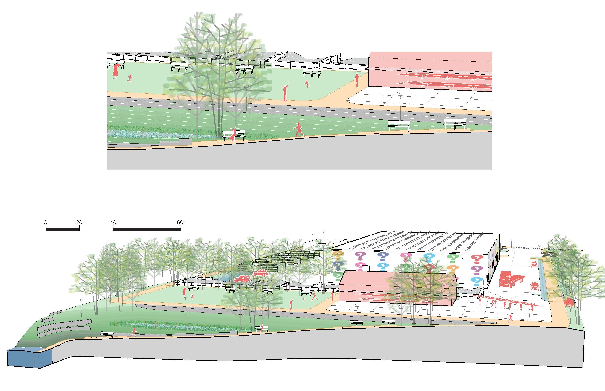
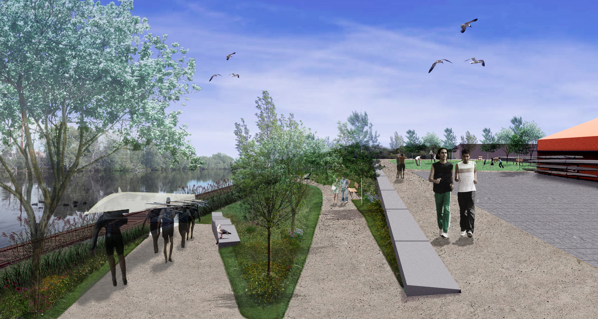
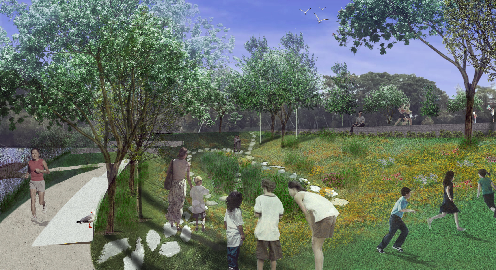
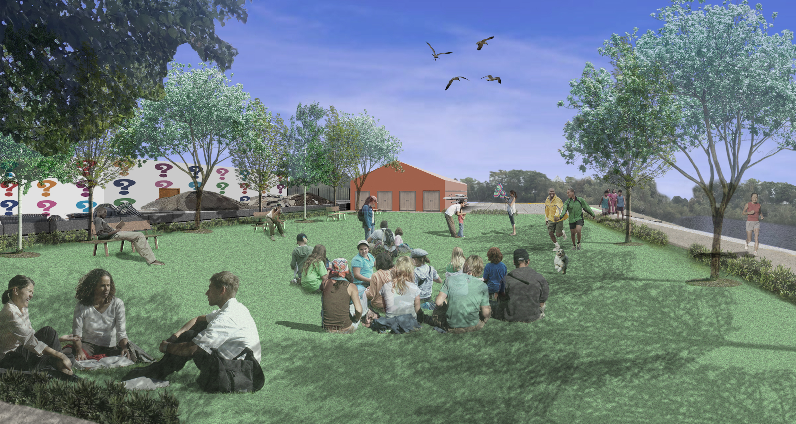

Site Planning
 









Malden River Works
- Location: Malden, Massachusetts
- Client: Department of Public Works, Malden
- Project date: September 2019 - December 2020
- Project URL: MaldenRiverWorks.org
- Final Report: View Here
The Malden River Works project was the 2019 recipient of the Norman B. Leventhal City Prize for Resilience and Equity. The core project team included MIT faculty, Mystic River Watershed Association, City of Malden, Friends of the Malden River, and a resident expert. As a member of this team, I worked closely with a Steering Committee, composed of 10 residents including people of color, women, and youth. Together, the project team and Steering Committee set goals and design criteria for the Department of Public Works (DPW) site in Malden. The design process included four public meetings, including two conducted online due to COVID restrictions.
In addition to creating an equitable process to amplify under-represented voices, this project produced a future flood resilient site plan for a 5-acre portion of the DPW along the river. The DPW yard hosts many city operations including salt storage, waste collection, construction debris, and dead trees. The concept design proposes a more space efficient reorganization of this yard, allowing five acres along the waterfront to be available for a public park.
Using 2070 sea level rise projections, we proposed an elevated park with a path connecting to future parks on adjacent properties. Based on the priorities of residents, this park included a multi-use space, access to the river, and reintroduced natural ecology of the area. Flood resilience was acheived using green infrastructure such as bioswales, bioretention ponds, and permeable pavers. Increased tree canopy is also proposed to mitigate rising urban temperatures.